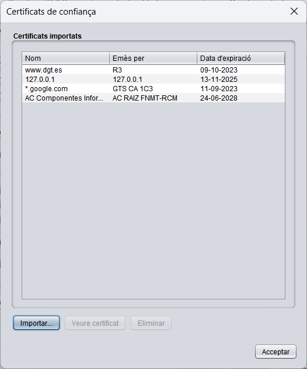
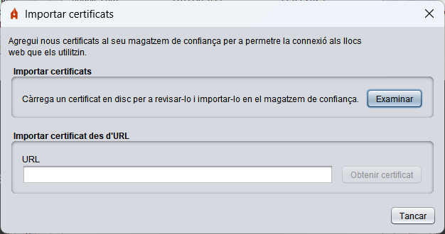
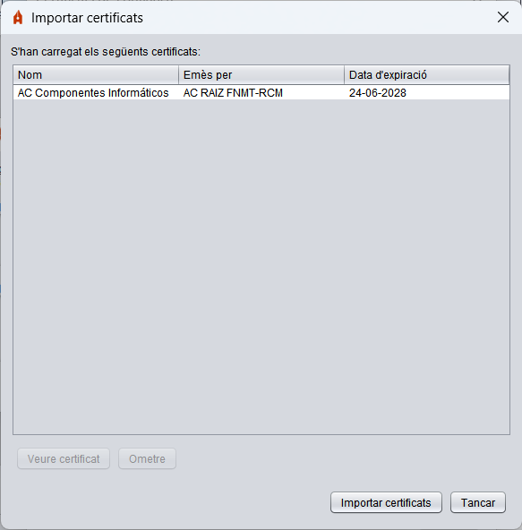

Certificats de confiança
Autofirma realitza connexions cap a servidors remots per a diverses funcions. En aquest apartat, es permet importar al magatzem de confiança d'Autofirma els certificats dels servidors als quals es que connecti Autofirma perquè siguin reconeguts com de confiança.

Les opcions en aquesta pantalla són:
- Importar: En seleccionar aquesta opció, s'obrirà un diàleg on es permet importar un certificat seleccionant l'arxiu des d'una ruta local o des d'una URL. En cas que s'importi localment, es permet la selecció d'un o diversos arxius i en cas d'una importació mitjançant URL, s'importaran l'emissor i els seus certificats superiors de la cadena de certificació.

Una vegada que s'hagin obtingut els certificats, apareixerà la següent pantalla amb els certificats que s'hagin carregat.

Les opcions en aquesta finestra són:
- Veure certificat: Obre una finestra amb la informació del certificat que s'hagi seleccionat en la llista.
- Ometre: Descarta el certificat que s'hagi seleccionat en la llista perquè no sigui importat.
- Importar certificats: Importa els certificats indicats en la llista al magatzem de confiança d'Autofirma.
- Tancar: Tanca la finestra.
- Veure certificat: Obrirà una finestra amb la informació del certificat que s'hagi seleccionat en la llista.
- Eliminar: Permet eliminar del magatzem de confiança d'Autofirma el certificat seleccionat.
Si es prem el botó Acceptar, es tancarà la finestra.